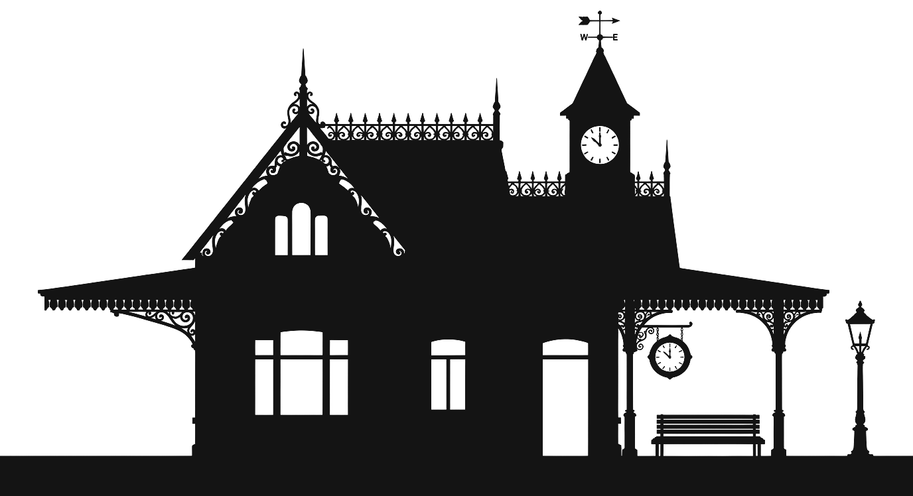
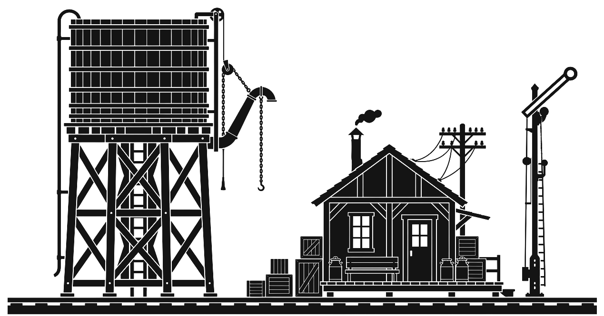
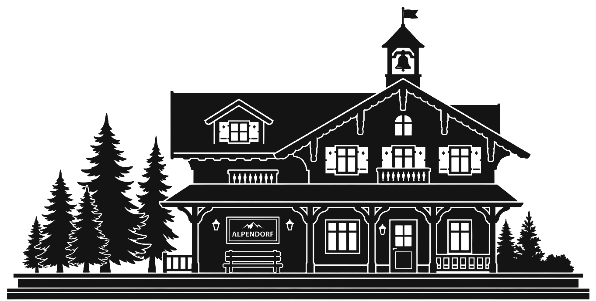
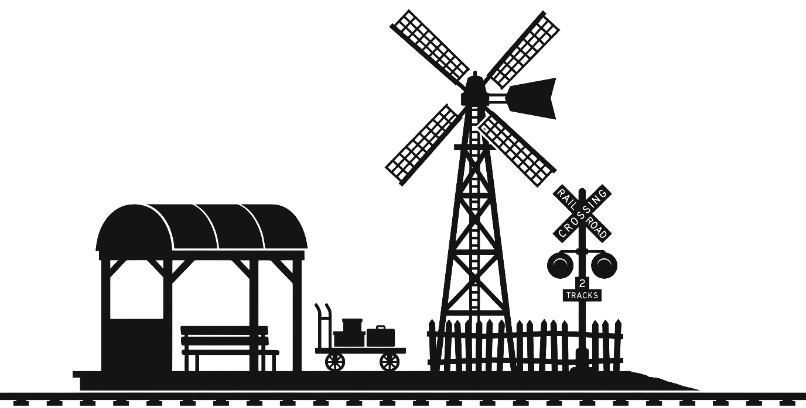
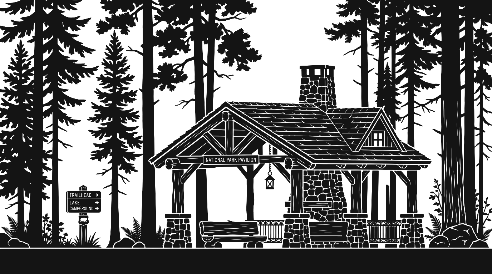
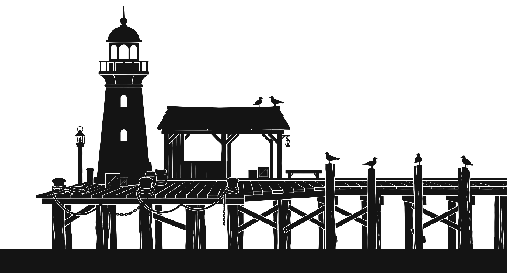

6 whimsical, pure-silhouette train stops designed with transparent alpha cutouts (windows, clocks, fretwork) for seamless GameSalad side-scrolling integration.

Steep gabled roof with delicate wrought-iron cresting, high clocktower with direction-marker weathervane, arched platform canopy brackets, hanging station clock, platform waiting bench, and antique gas street lamp post.

Classic wooden stave water tank on tall timber trestle legs, counterbalanced pull-down water spout with chain, adjacent telegraph shack with smoking stovepipe, platform deck with milk cans and cargo crates, telegraph pole, and tall semaphore signal arm.

Swiss A-frame chalet station with carved timber rafter brackets, roof belfry bell tower with wind flag, decorative shutters, platform timber awning with carved "ALPENDORF" mountain sign, rustic platform bench, and majestic evergreen pine trees.

Iconic lattice-blade windmill in silhouette, curved tin passenger waiting shed with bench, railway crossing crossbuck ("RAILROAD CROSSING 2 TRACKS") with twin signal flashers, low post-and-rail picket fence, and trackside luggage handcart.

Rustic timber park shelter canopy supported by stone masonry pillars and rough-hewn log posts, fieldstone hearth fireplace chimney, hanging trail lantern, cedar log benches, national park "TRAILHEAD / LAKE / CAMPGROUND" signpost, and dense fir/pine tree silhouettes.

Vintage coastal lighthouse tower with round lantern gallery room and dome, open maritime wooden wharf shelter resting on rustic pier pilings with cross-bracing, dockside mooring bollards with coiled marine ropes, nautical lantern post, and perched seagulls.